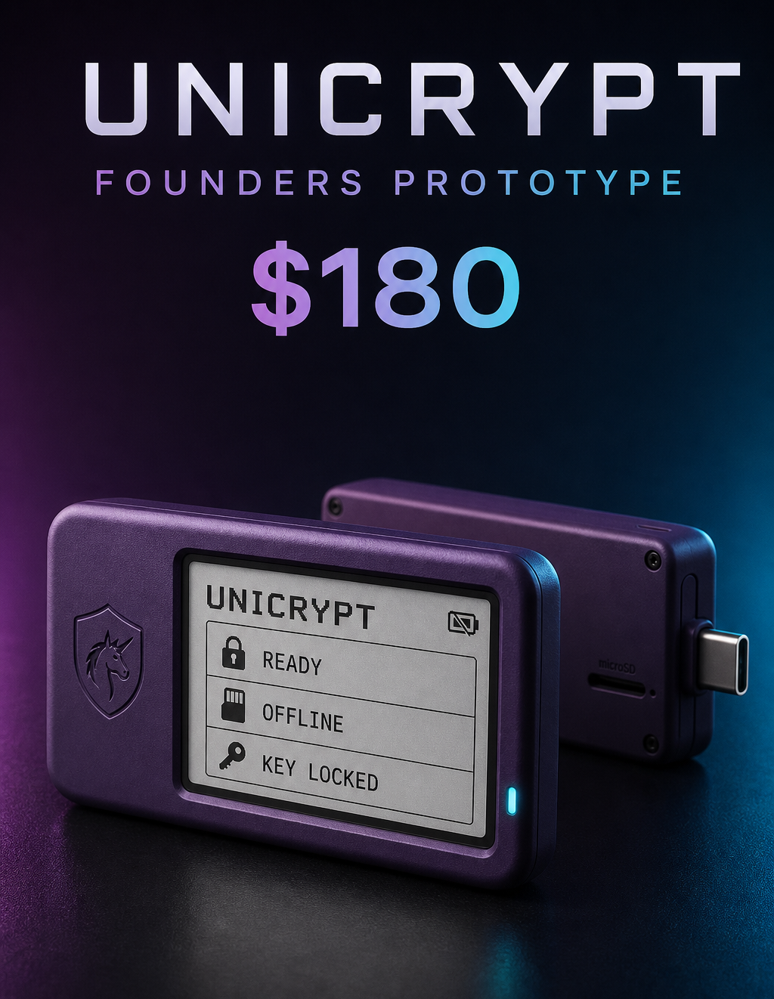

Model freedom
Choose the right local or connected model for each task instead of being locked to one provider.
PERSONAL SOFTWARE ·SMART HARDWARE ·HUMAN DIRECTION
Tethered Unicorn Labs creates personalized software and AI-driven hardware that fits real people and real work. We want custom technology to be attainable—not reserved for giant companies—and electronics to feel useful, understandable, and genuinely fun.
01 / THE LAB
We believe the next generation of personal computing will be adaptive, model-flexible, and capable of meaningful action. Software should learn the individual or company it serves while preserving agency and showing its work.
We pair that intelligence with approachable electronics: private devices, playful interfaces, and hardware that turns an idea into something people can hold, understand, and enjoy.
02 / AI PLATFORM
INTRODUCING
A local-first AI command center—and a foundation for personalized software—designed to do the work, not merely describe it.
Explore the dedicated Forge page →Choose the right local or connected model for each task instead of being locked to one provider.
See commands, tool results, failures, approvals, and verification while agents work.
Organize projects, files, conversations, skills, and approved memories around the individual.
Coordinate suitable work across trusted computers while the owner stays in control.

03 / FLAGSHIP HARDWARE
FOUNDERS PROTOTYPE
A self-contained compression and encryption appliance designed to keep the master key off the computer and operate without cloud services or installed desktop software.
04 / OUR PRINCIPLES
Local capability and deliberate data boundaries should be defaults, not premium upgrades.
An agent should verify what happened and admit what did not—not simply announce success.
Friendly color, tactile hardware, and moments of delight can make difficult technology easier to understand and explore.
Powerful automation needs visible activity, scoped permissions, interruption, and recovery.
05 / COMPANY
Tethered Unicorn Labs is an early-stage product company building AI-driven hardware, personalized software, reliable agents, private compute, and adaptive interfaces for individuals and organizations.
We are beginning with Unicorn Forge and UniCrypt, but the larger mission is to make custom technology attainable for more people. The work is ambitious; the method stays grounded in useful prototypes, responsible experimentation, continuous verification—and just enough playfulness to invite curiosity.
06 / INVESTORS & COLLABORATORS
Our early seed conversation supports two complementary product tracks: hardening Unicorn Forge’s personalized agent workspace and advancing UniCrypt from founders prototype toward an auditable pilot device. Funding priorities include dedicated compute, product and hardware engineering, security validation, legal foundations, field testing, and focused research and development.
Technical collaborators, design partners, and thoughtful early testers are welcome too.